VEDAANTA
DESIKA
PROF. K. R. RAJAGOPALAN
There have been many centenary celebrations in the recent past;
but one which has, perhaps, not been so widely known is the sapta-centenary
of Vedanta Desika which was celebrated in 1968. Even during
1968, college students did not know who Desika was–as
brought out in a Quiz programme that year. The purpose of this short article is
to acquaint the readers with this illustrious son of Tamil Nadu
who lived seven hundred years ago.
The town of
All groups of Hindus derive their authority from the Vedas, so too
Sreevaishnava Siddhaanta
(as it is locally called in Tamil Nadu) or Visishtaadwaita Siddhaanta.
The Aalwaars of this land gave the
quintessence of the Vedic Dharma in Tamil verses called Naalaayira
Prabandham. These ideas were codified into a
philosophy and a way of life by Aachaarya Raamaanuja who lived in the 11th-12th centuries. This
scheme of rivivalism got an impetus from the revered Vedaanta Desika who systematised the daily life of a Sreevaishnava;
elucidated many of the earlier writings by his commentaries; served as a
rallying point in times of theological stress and strain; and gave the
followers of Sree Raamaanuja
his immortal grantha Rakasya-traya-saara,
in which the concept of prapatti or
surrender is fully explained. His influence has been so profound that he is
referred to one of the trio–Aalwaars, Sree Raamaanuja and Desika.
His Life
Vedaanta Desika
was the only son of a very pious and devout couple in the picturesque village
called Tooppul near Kaancheepuram.
His father Anantasoori named him Venkatanaatha–after
the Lord of the Tirumalai Hills with whose
graciousness the child was supposed to have been born. His mother was Totaarambaa. Venkatanaatha had
his Upanayanam at an early age and
started his education under his maternal uncle Appullaar
or Aatreya Raamaanuja.
Before he was twenty, he learnt all that was possible and became quite
proficient in expounding the Sree Bhaashya–the
magnum Opus of Aachaarya Raamaanuja. He married Tirumangaiyar
perhaps in 1289 and lived the life of a Grihastha
in the traditional manner. This couple had an only son– Varadaacharya
who was born when Venkatanaatha was 46 years old. He
lived mostly in Kaanchipuram, Sreerangam,
Tiruvaheendrapuram (near Cuddalore ) – going from one
place to another in response to the invitations of the residents either to give
learned discourses or to conduct dialogues with people professing other faiths.
When Mohammedans invaded Sreerangam and desecrated
the temple there, Venkatanaatha went to Satyamangalam (in the
Like many of the other great personages in history, he too is
credited with having worked a number of miracles–but his greatness does not rest
on them. Quite a large number of stories and anecdotes have been wound round
his name and works; but we would not go into them here.
His Works
The mere cataloguing of his works
would be an exercise in itself–his output is so
large and varied! He has compositions agalore in
Samskrit, Praakrit and Tan1il–besides ManiPravaalam,
an admixture of Samskrit and Tamil. His Tamil works are
affectionately referred to as Desika Prabandham (as a sequel to the Naalaayira
Prabandham of the Aalwaars).
He is reputed to have composed 119 works all of which are not now
available. They may be classified into the following six headings–manuals of Sree Vaishnava religion and esoterism; theses on Sree Vaishnava theology and ritualism; devotional and didactic
poetry; literary works; original philosophical treatises; and commentaries.
For popularising the ideas and ideals of
Sree Vaishnavism and
spreading the religion and philosophy of the Aalwaars
and Aachaaryas, Venkatanaatha
wrote a number of manuals of which the following may be mentioned–Nyaasa Dasakam, Vaishnava Dinacharyaa, Vairaagya Panchakam, Sampradaaya Parisuddhi and Paramapada
Sopaanam–in sanskrit,
Tamil and Manipravaalam. Out of these, the first
mentioned small work of ten stanzas explains in simple language the concept of Saranaagati or complete surrender of oneself
to the Lord. A free translation of one them is: “I, whom am bereft of anything
tangible, with no other refuge, in full faith and confidence that You will protect me, pray to You, the giver of all, to
accept my bondage to You.”1 This exemplifies all the five Angas of Saranaagati
or Prapatti. The Vairaagya Panchakam contains
the following famous words: “I do not have any legacy left by my forefathers;
neither have I earned anything (in my life); at the top of the Hastigiri (Kaanchi temple) is my
family treasure.”
The characteristic features of Sree Vaishnavism are sought to be explained in the following
works of his–Nikshepa
Raksha, Rahasyatraya-saara.
The latter is his magnum opus, written in a highly Samskritised Tamil with a number of Samskrit slokas interspersed
and explains the full significance of Visishtaadwaitic
thought, philosophy and religion. This work is held in very high esteem and is
studied only with the help of one’s Aachaarya.
Rahasya-traya-saaram is an
exposition of the three Rahasyas which form the
essence of teaching to the Sishya from the Guru. They are: (i)
the Moolamantra viz., 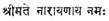 (Sreemate Naaraayanaaya Namaha); (2) the Dwayamantra viz., 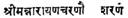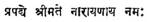 (Sreeman Naaraayana Charanow Saranam Prapadye Sreemate Kaaraayanaaya Namaha) and (3) The Charama sloka viz.,
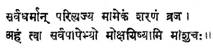
Sarva Dharmaan
Parityajya Maamekam Saranam Vraja
Aham twaa Sarvapaapebhyo
Mokshayishyaami Maasuchaha.
These are to be learnt direct from the Guru alone with his
blessings and hence the Guru. nay, the Guruparampara itself, is held in very high esteem in Visishtaadwaitic thought and religion.
Vedaanta Desika
has expounded and explained the concept of Saranaagati
(Complete surrender to the Lord) in the above work which is in a highly Samskritised Tamil interspersed with Samskrit stanzas. A
few are given below:
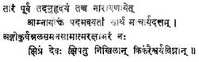
[Moolamantraadhikaaraha-stanza
I]
Taaram Poorvam
Tadanuhrudayam Taccha Naaraayanaayet
Aamnaayoktam Padamavayataam Saarthamaachaarya Dattam
Angeekurvan Alasamanasaamaatmarakshaabharam
Kshipram Devaha
Kshipatu Nikhilaan Kinkaraiswarya Vighnaan
The Moolamantra is praised as follows–(It) has Pranava
(Om) in the beginning, then Namaha
in the middle and Naaraayanaaya who is revered in
the Vedas at the end; may the Lord accept the burden of us who have learnt the
meaning of this Mantra through the (kindness of) Guru and may He remove the
impediments in our attaining the wealth of service to the Lord.
The second of the Rahasyaas, the Dwayamantra is spoken of the next stanza viz.,
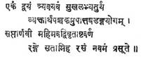
(Dwayamantraadhikaaraka - last stanza)
Ekam Dwayam
Tryavayavam Sukhalabhyaturyam
Vyaktaartha Panchakamupaatta
Shadangayogam
Saptaarnavee mahimavadvivritaashta Varnam
Range Sataamiha Rasam Navamam Prasoote.
A free translation would be–“This has only one sentence but is of
called Dwayam or two-fold; has three sub-sentences; can give you easily
the fourth sukha (Dharma, Artha,
Kaama, Moksha); explain.
the five-fold meanings; gives one of the six ways of the Prapattiyoga; is as famous as the seven oceans;
expounds the Ashtaaksharam or the eight-syllabled Mantra; and gives the ninth Rasa (viz.
Saanti) to those in this world.
The stringing together of the numbers from one to nine in this sloka is to be specially noticed.
The next quotation is from the Charamaslokaadhikaaraha,
to explain the excellence of that stanza:
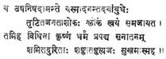
Sree Krishna is near the Upanishads, and
is the embodiment of the vast world of kindness; from Him the Charamasloka came out by itself and it removed the sorrows
of the common men (Janata) of this world; we, due to
our good luck, have got Krishna as our saviour and
(so) we shall have no doubts or fears regarding our salvation; but, having been
freed of our sins, we shall live (always) in happiness.
His poetic exuberance found expression in a series of verses
composed in praise of the Lord in His manifestations in various forms and in
various places. To mention only a few: We have the Kaamaasikaastakam
on the Nrisimha shrine in Kaanchi;
the Hayagreevastotra on the diety at Tiruvaheendrapuram ; Bhagavaddhyaanasopaanam on Sreerangam; Varadaraaja
Panchaasat, a string of fifty verses on Varadaraaja of Kaanchi; Dayaasatakam, a garland of hundred verses on Venkatanaatha, the Lord of the Seven Hills. His imagery is
indeed very much different from that of many others, who also have sung similar
poems. Venkatanaatha has composed Dasaavataara
Stotram on the die ties of the unique temple in Sreerangam in which the ten Avataaraas
of Vishnu are depicted as Moolavigrahaas. The
stanza in which he combines all the ten Avataaraas is
indeed representative of the individualistic way of presentation:
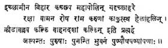
God assumed the Matsya form
due to the desire (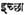)
of enjoying a sojourn in the waves; the Kurma
fonn for playing ( 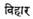 ); the Varaaha
form is noted for its size, as the entire earth had to be lifted out of the
ocean by the Varaaha; God took upon the Nrisimha form “just like that”–had not made preparations before
evidently. The Vaamana was for
protecting the pious; Parasuraama was
noted for his quick anger; Daasarathi Raama for his Karuna
naturally and Balaraama for his plough;
Many of these stotras are being recited
everyday in many homes: these form the introduction of the children to Vedaanta Desika. His Garudadandakam in Dandaka
meter, a rythmic prose piece and Raghuveera Gadyam in
poetic prose are also famous as pieces to be set for recitation; he has an Achyuthasatakam in Praakrit
too; containing 101 Gathas.
There are other longer works of his also Paadukaasahasram
is a long poem of 1008 verses traditionally said to have been composed
within three hours of the night.
These verses sing the glory of the Paadukaa
of Sri Ranganaatha [who, according to Desika, assumed the ten Avataaraas]. It has been said that this
poem “is a study into the Raamaayana of
Vaalmeeki bringing out all its niceties as an epic
poem of love and devotion.”
Yaadavaabhyudaya is a Mahaakaavya
on the lines of Raghuvamsam containing
24 cantos describing the Yadu race,
On the model of Meghasandesa, Desika has a Hamsasandesha
containing 110 verses in two
parts. The first thereof describes the places over which the swan is to go to
convey the message of Rama to Sita who is held in captivity in Lanka. The
second part deals with the intense love of Rama to Sita–bringing out the
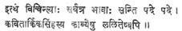
Soul’s
outpourings to the Divine from whom it has been separated and is pining to be
reunited.
In addition to the above, Vedaanta Desika has written original philosophical treatises and
commentaries also. Nyaayaparisuddhi, Tatwa-muktaakalaapa (which is quoted by Maadhavachaarya Vidyaaranya in
13th century) and Adhikaranasaaraavali an
exposition of Brahmasutra are some of
them. Of no less importance are his commentaries –Tatwateeka, an
exposition of the Sree Bhaashya;
a supercommentary called Taatparya
Chandrika on the Geetaa
Bhaashya of Sree Raamaanujaachaarya; one in Samskrit and another in Tamil,
on the Geethaartha Sangraha
of Yaamunaachaarya and on the three Gadyas of Sree Raamaanuja.
He was respected and revered even during his time; later too, other
poets and scholars have referred to him in very appreciative terms. Venkataadhwarin a writer of 17th century states in his Viswagunaardarsachampu
that Kaanchi derives its glory due to its being
the birth-place of Vedaanta Desika,
who was an ideal man of all times. He was conferred such honorifics as sarvatantraswatantra (master of all arts). Kavitaarkikasimha (Lion of logic), Vedantaachaarya, Vedaanta
Desika. Even as early as 1350, he was considered
good enough to be quoted upon in Maadhavaachaarya’s Sarvadarsanasangraha, as an authority for Raamaanuja’s philosophy. Doddaacharya in 16th century has written a
biography of Desika called Vaibkavaprakasika.
Pillai Lokaacharya, a
contemporary of Desika, was instrumental in saving
the Utsava idol of Sree Ranganatha of Sreerangam from
Muslim vandals; he is credited with a benedictory verse on Desika.
Today, Desika is almost deified by his followers–his name is invoked before doing any important religious
festival in many families. Perhaps this has not been without its bad effects–his exemplary life and austere
habits have been almost forgotten and only
pooja to his idol is being performed!
Venkatanaatha performed the duties of a Sreevaishnava with great devotion; he discharged his
obligations including that of teaching his Son Varadaachaarya.
He lived up to his teachings–a
saying which could be mentioned with regard to few people.
Such an illustrious personage is likely to make an appearance once
in several centuries only. “He was an institution in himself and his philosophy
a mission.”
1
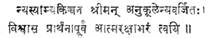